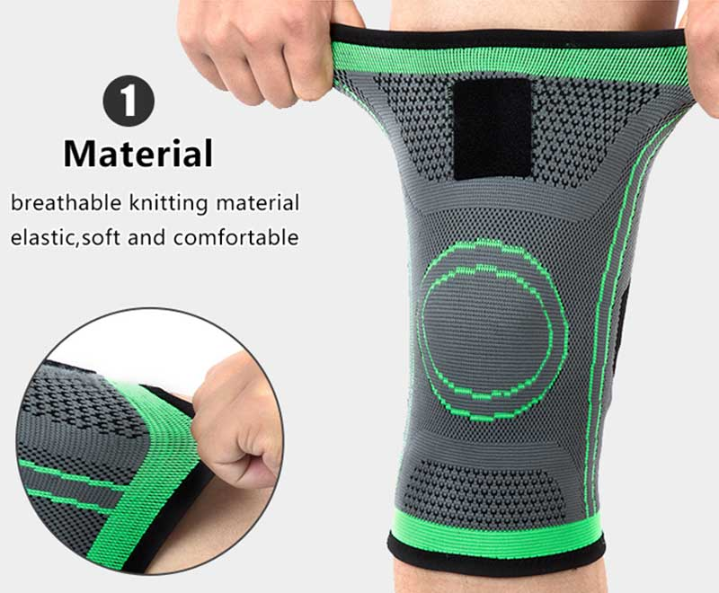
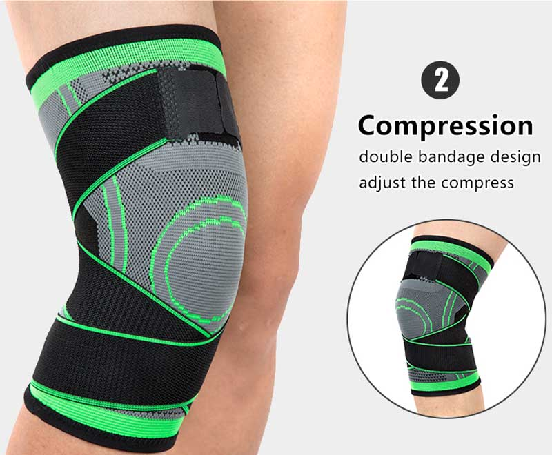
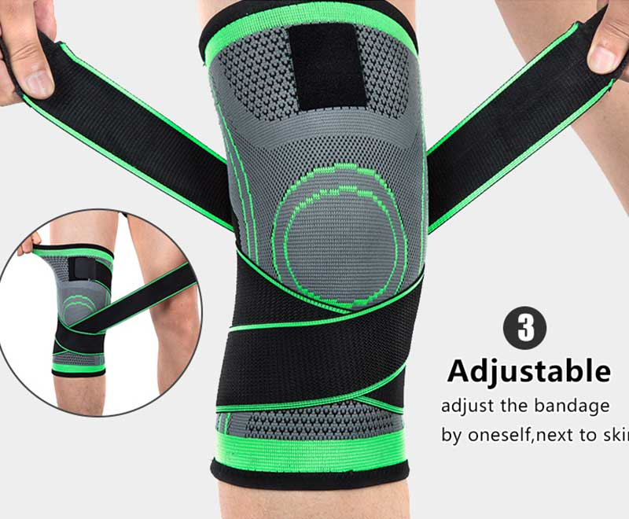

"Nach Angaben des American College of Physicians (ACP) leidet derzeit fast jeder vierte Erwachsene in irgendeiner Form an Knieschmerzen (1). Schlimmer noch, die Krankheit ist nicht mehr auf Senioren beschränkt. Die lästigen Schmerzen schränken nicht nur ihre Mobilität ein, sondern mindern auch ihre Lebensqualität. Angesichts der düsteren Situation ist es kein Wunder, dass so viele Menschen um jeden Preis nach einer einfachen Lösung suchen."
Bis heute hat sich die ersehnte Linderung endlich eingestellt, dank einer bahnbrechenden Kompressionsmanschette namens Caresole Circa Knee.
Obwohl viele Leute nie an die ganze Sache mit den Kompressionsmanschetten geglaubt haben, haben sie ihre Einstellung geändert, nachdem sie die innovative Kompressions-Knieschutzhülle eine Zeit lang ausprobiert haben.
Hohe Arzthonorare, schädliche Medikamente, invasive und risikoreiche Operationen sind nur ein paar Gründe, warum Patienten mit Knieschmerzen frustriert sind. Sie geben mehr und mehr Geld für die Behandlung aus, aber Ihr Problem ist nicht gelöst. Das Ergebnis ist, dass Ihr Knie immer noch schmerzt und Ihr Geldbeutel leer ist.
Zum Glück kann Circa Knee™ Ihnen helfen, Ihre Schmerzen zu lindern. Ein US-amerikanisches Startup-Unternehmen, Caresole, hat eine neue innovative und patentierte Kompressionskniestrumpf-Technologie namens Circa Knee™ entwickelt, die die Art und Weise, wie Knieschmerzpatienten ihren Alltag erleben, völlig verändert und ihnen helfen kann, sich bei der Ausführung gewöhnlicher Aufgaben wohler zu fühlen.
"Wie wir alle wissen, gibt es eine Menge Verwirrung rund um das Thema "Knieschmerzen"." Tatsächlich berichtete die New York Times kürzlich:"
"Einer der größten Fehler, den Menschen bei [Gelenkschmerzen] machen, ist, die Bewegung des betroffenen Gelenks einzuschränken, was zu Steifheit und Schwäche führt, was die Sache nur noch schlimmer macht."
Was bedeutet das für Sie? Wenn Sie Gelenkschmerzen vermeiden wollen, müssen Sie sich weiterhin bewegen. Aber wenn Sie unter Schmerzen und Steifheit leiden, ist Bewegung das letzte, woran Sie denken wollen. Ein aktiver und ausgerichteter Körper heilt sich jedoch selbst. Sie müssen sich weiter bewegen und aktiv bleiben, so sehr Sie auch nicht wollen. Wir haben diese Kniemanschetten hergestellt, um eine ganz natürliche Option zu bieten, um die hartnäckigen Schmerzen zu lindern. Deshalb haben wir diese Knieschutzhüllen der Öffentlichkeit mit einem Rabatt von 50 % zur Verfügung gestellt, nur für eine begrenzte Zeit.
Mit hochwertiger Stabilisierungstechnologie bietet die Caresole Circa Knee stabile Unterstützung für Ihre Knie und lindert Schmerzen und Ermüdung an der Quelle.
Und es macht einen guten Job, an Ort und Stelle zu bleiben und die Bewegung nicht zu behindern. Abgesehen davon sorgt das weiche Neoprenmaterial, aus dem die Ärmel bestehen, auch für Wärme, Sie können sie den ganzen Tag über tragen, um Ihr Knie zu schützen und zu stützen.
Und noch etwas: Sie bietet die nötige Unterstützung bei minimalem Volumen, was viel besser ist als eine klobige Kniestütze. Sie können sie an den Knien tragen, so dass Sie sie in Ihrer Kleidung tragen können.
Er kann jedoch nicht nur von den Menschen mit Arthrose applaudiert werden , sondern auch kann er insbesondere Menschen mit falsch ausgerichteten Knien (z. B. Knieklopfen) helfen, da er eine gesunde Kniestellung bereitstellen und fördern kann, um ihre Stützfunktion zu unterstützen. Dies gilt für den Heilungsprozess während der Reparatur, beispielsweise nach einem Kreuzbandriss.
Übrigens wird der Effekt der Knie-Erholung bald wirksam sein! Denn der leichte Schmerz kann vom ersten Tragen an gelindert werden! Nach einer Woche häufigen Tragens erreicht es sein volles Potenzial und Sie bewegen sich schließlich normal!
Caresole Circa Knee kann Ihre Knie natürlich heizen.Die hohe Effizienz der Knie-Ärmel hilft Ihnen, viel Geld zu sparen! Jedes Jahr verschwenden Ibuprofen, lose Salben und andere Medikamente Hunderte Dollars. Wenn sich die Knieschmerzen nicht gebessert haben, müssen Sie sich möglicherweise einer teuren und riskanten Operation unterziehen.Er wird Ihnen bei Ihrer täglichen Arbeit und Ihrem Leben viel helfen.



Caresole Circa Knee ist jetzt nur online verfügbar und kann auf der offiziellen Website erworben werden. Alles was Sie tun müssen, ist die Versandinformationen online zu vervollständigen und Ihre Bestellung zu bezahlen, dann können Sie früh genug einen Lebensretter bekommen!
Jetzt kostet dieser unglaubliche Lebensretter nur noch $24.95, das beste Angebot aller Zeiten! Kaufen Sie es jetzt und Sie werden feststellen, dass es die Investition wert ist!
40% Rabatt genießen und Verfügbarkeit prüfen >>*Hinweis: Wenn Sie von der zeitlich begrenzten Aktion nutzen möchten, ist es wichtig, dass Sie Ihren Circa Knee Sleeves 40% Rabatt jetzt beanspruchen, sonst ist es zu spät. Die Vorräte gehen zur Neige und die Verfügbarkeit ist nicht garantiert.